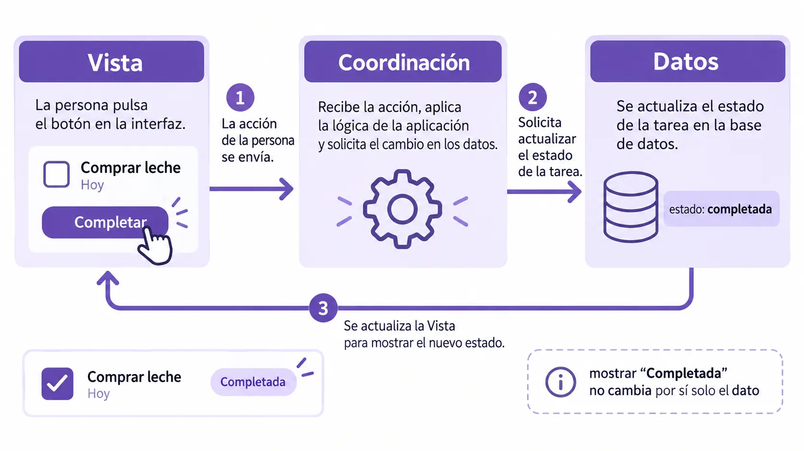

RA1 · 01 — Patrones de arquitectura de las aplicaciones gráficas¶
Guía docente · DAM · Desarrollo de Interfaces · Versión 2.0
Itinerario principal: aplicaciones web generadas con IA.
Diseño: Material Design 3 durante todo el curso.
Actividades: RA1-EJ01 y RA1-PB01.
Tiempo previsto: 35 minutos de explicación y ejemplo, 15 de práctica y 10 de corrección, incluidos en las 18 horas de RA1.
Ampliación voluntaria: Android, XML y Java, fuera de las horas y requisitos obligatorios.
1. Orientaciones docentes¶
El alumnado conoce Java y comienza desde cero en interfaces. Este bloque enseña a reconocer responsabilidades en una aplicación: presentación, datos y coordinación. No se pretende que escriba código ni implemente un patrón desde cero.
Los fragmentos son ejemplos didácticos de salida de IA preparados para lectura. No reproducen una sesión real de Stitch ni se afirma que hayan sido exportados desde un editor visual. El alumnado aprenderá a localizar las mismas responsabilidades en su propia salida, aunque cambien los nombres o la distribución de archivos.
Objetivos observables¶
- Identificar estructura visual, estilos, datos y respuesta a una interacción.
- Distinguir el estado real de la aplicación de lo que muestra la pantalla.
- Explicar qué parte necesita cambiar ante un requisito.
- Pedir a la IA una modificación delimitada y revisar su efecto.
- Reconocer las ideas básicas de MVC y MVVM sin memorizar sus implementaciones.
Relación con la evaluación¶
PB01 aporta evidencia de comprensión a RA1.e. Para demostrar específicamente el análisis del código generado por un editor visual, se incluirá una pequeña transferencia a la salida real del editor web que se utilice en RA1. La lectura de los fragmentos por sí sola no demuestra esa procedencia. Las prácticas de editor y el integrador completarán dicha evidencia. Android no es necesario para ello.

2. Contenidos básicos explicados¶
2.1 Arquitectura: organizar responsabilidades¶
La arquitectura describe cómo se reparten las responsabilidades y cómo se relacionan. Una aplicación puede verse bien y tener sus responsabilidades mezcladas. Por ejemplo, el texto «Completada» podría aparecer en pantalla aunque el dato de la tarea siguiera indicando que está pendiente.
Para examinar una salida de IA planteamos tres preguntas:
- ¿Qué describe la pantalla?
- ¿Dónde está la información que la aplicación considera verdadera?
- ¿Qué conecta la acción del usuario con el cambio de esa información y su representación?
No se reconoce una arquitectura contando archivos. Una solución en un solo archivo puede separar responsabilidades con funciones; una solución con muchos archivos puede mezclarlas.
2.2 Vista: estructura y presentación¶
En la web, HTML describe elementos como títulos, campos y botones. CSS define aspectos de presentación como color, tamaño y distribución. JavaScript también puede crear o actualizar elementos de la vista.
El navegador representa el documento mediante el DOM: una estructura de objetos que el código puede consultar y modificar. En este capítulo basta con entender que una instrucción puede localizar un botón por su identificador y cambiar una de sus propiedades.
HTML y CSS pertenecen aquí a la vista, pero «vista» no significa necesariamente un único archivo HTML. Una herramienta puede generar componentes que reúnen estructura y lógica de presentación.
2.3 Modelo: datos y reglas¶
El modelo representa información con significado para la aplicación: título de una tarea y si está completada. Puede incluir operaciones que modifican esa información.
No hace falta una base de datos para tener un modelo. En nuestros ejemplos los datos viven en memoria y se pierden al recargar la página. Persistencia y modelo son conceptos distintos.
En Java el alumnado ya conoce objetos y atributos. En JavaScript encontrará objetos con propiedades. Aunque ambos lenguajes comparten algunas formas de escritura, JavaScript no es una versión de Java: se explicará solamente la sintaxis necesaria para leer cada fragmento.
2.4 Coordinación e interacción¶
Un evento representa algo que ocurre, como activar un botón. Un escuchador registra qué función debe responder. La coordinación solicita un cambio al modelo y actualiza la vista.
En el ejemplo utilizaremos addEventListener para asociar una respuesta a click. No ejecuta la acción al registrar el escuchador: establece qué debe ocurrir cuando llegue el evento. Referencia de eventos en MDN.
2.5 MVC y MVVM¶
| Responsabilidad | MVC | MVVM |
|---|---|---|
| Datos y reglas | Modelo. | Modelo y servicios o capas de datos relacionados. |
| Representación | Vista. | Vista. |
| Coordinación de interacciones | Controlador. | Operaciones y estado de presentación expuestos por el ViewModel. |
| Relación con la pantalla | El controlador coordina cambios en el modelo y la representación, según la implementación. | La vista consume u observa el estado de presentación y envía acciones. |
| Pregunta de lectura | ¿Quién recibe la interacción y coordina la respuesta? | ¿Dónde está el estado que necesita representar la vista? |
Son modelos de organización, no reglas que permitan etiquetar automáticamente una aplicación. Usar React no implica por sí solo MVVM; llamar Controlador a un archivo tampoco demuestra MVC.
Nuestro ejemplo ilustra una separación sencilla inspirada en MVC. No desarrolla un framework ni un ViewModel: estos últimos se comparan conceptualmente, sin exigir una segunda implementación.
2.6 M3 y arquitectura¶
M3 es la referencia de diseño del curso. Las librerías implementan decisiones visuales; su documentación no sustituye las pautas de M3.
En este bloque interesa reconocer que color, tipografía y estados visuales pertenecen a la presentación. Cambiar el color principal no debería alterar los datos de la tarea. Marcar una tarea como completada, en cambio, requiere modificar el estado y representarlo.
Los fragmentos siguientes omiten estilos para concentrar la lectura en la arquitectura. No son una pantalla M3 completa ni permiten certificar su conformidad. En la aplicación generada se revisarán el botón, la jerarquía de texto, los roles de color y los estados de interacción usando M3.
3. RA1-EJ01 — Completar una tarea¶
3.1 Situación¶
La aplicación muestra el título de una tarea, su estado y un botón «Completar». Al activarlo, cambia el estado a completada, se actualiza el texto y el botón queda deshabilitado.
El profesor presenta la salida preparada, señala las responsabilidades y pide al alumnado que prediga el recorrido antes de explicarlo.
3.2 Prompt orientativo para Gemini o AI Studio¶
Prepara una aplicación web sencilla para mostrar y completar una tarea.
El alumnado sabe Java, pero está aprendiendo a interpretar interfaces web.
Usa Material Design 3 (https://m3.material.io/) como referencia visual.
Separa estructura, estilos, datos y coordinación con nombres descriptivos.
La tarea empieza pendiente; al completar cambia el dato, el mensaje y el botón.
Sin servidor, autenticación ni persistencia. No añadas funcionalidades.
Explica los fragmentos relevantes y la relación con lo que ve el usuario.
Indica qué archivos has generado y cómo comprobar el comportamiento.
No afirmes que se ha probado si no lo has ejecutado.
Si la herramienta utiliza un framework, se pedirá que señale las responsabilidades equivalentes. Para la explicación inicial se utiliza JavaScript sencillo, evitando que la sintaxis del framework oculte el concepto.
3.3 Salida ilustrativa: estructura de la vista¶
Extracto de index.html. El código de interacción se ejecutará después de que existan estos elementos, por ejemplo mediante un script con defer.
<section aria-labelledby="titulo-tarea">
<h1 id="titulo-tarea"></h1>
<p id="estado-tarea" role="status"></p>
<button id="completar-tarea" type="button">Completar</button>
</section>
Qué identificar:
h1ypreservan lugares para título y estado.- Los valores de
idpermiten localizar los elementos. - El botón es un control nativo activable por teclado. No se sustituye por un texto con apariencia de botón.
role="status"identifica un mensaje de estado; su comportamiento con tecnologías de apoyo deberá comprobarse en la aplicación.- El título de la tarea no está escrito dentro del HTML: llega de los datos.
3.4 Salida ilustrativa: modelo¶
Extracto de app.js, primera parte:
const tarea = {
titulo: "Preparar exposición",
completada: false
};
function completarTarea() {
tarea.completada = true;
}
tarea referencia un objeto. const impide reasignar esa referencia, pero no impide modificar sus propiedades. completada es el dato del estado; no es el texto mostrado al usuario.
La función no necesita conocer el botón. Esta separación permite cambiar la presentación sin cambiar la operación del modelo.
3.5 Salida ilustrativa: representación y coordinación¶
Extracto de app.js, a continuación del anterior:
const titulo = document.querySelector("#titulo-tarea");
const estado = document.querySelector("#estado-tarea");
const boton = document.querySelector("#completar-tarea");
function mostrarTarea() {
titulo.textContent = tarea.titulo;
estado.textContent = tarea.completada ? "Completada" : "Pendiente";
boton.disabled = tarea.completada;
}
boton.addEventListener("click", () => {
completarTarea();
mostrarTarea();
});
mostrarTarea();
| Fragmento | Lectura en lenguaje corriente |
|---|---|
querySelector("#...") |
Localiza un elemento por su identificador. |
textContent = ... |
Asigna el texto que debe mostrar. |
condicion ? A : B |
Elige A si la condición es verdadera y B si es falsa. |
boton.disabled |
Controla si el botón está deshabilitado. |
() => { ... } |
Función que responderá al evento. |
Última llamada a mostrarTarea() |
Representa el estado inicial antes de pulsar. |
El bloque de mostrarTarea se ocupa de presentación. El escuchador coordina operación y actualización. Que ambos estén en app.js no elimina esa distinción.
3.6 Recorrido y resultado resueltos¶
| Momento | Dato | Pantalla |
|---|---|---|
| Inicio | completada es false. |
Título, «Pendiente» y botón disponible. |
| Activación | completarTarea() cambia el dato a true. |
Todavía necesita representarse el nuevo estado. |
| Actualización | mostrarTarea() consulta el dato. |
«Completada» y botón deshabilitado. |
| Recarga | El script crea de nuevo el objeto inicial. | Vuelve a «Pendiente»: no hay persistencia. |
Pregunta: ¿basta con cambiar el texto a «Completada»?
Respuesta: no. Si el dato sigue siendo false, la siguiente representación volverá a mostrar «Pendiente».
3.7 Cambio solicitado a la IA¶
Cambia la etiqueta visible del botón a “Marcar como terminada”.
Conserva el id completar-tarea, los datos y el evento. Muestra solo la
modificación y explica por qué el modelo no necesita cambiar.
Diferencia esperada:
- <button id="completar-tarea" type="button">Completar</button>
+ <button id="completar-tarea" type="button">Marcar como terminada</button>
El identificador conserva la conexión con JavaScript. El alumno debe comprobar el nuevo texto y que la acción continúa funcionando. No se acepta una regeneración completa como explicación del cambio.
RA1-PB01 — Mapa de responsabilidades¶
Tiempo: 15 minutos. Entrega: tabla y respuestas breves. No se solicita escribir código. El profesor entrega esta sección sin el solucionario.
Escenario y salida de IA para analizar¶
Una aplicación muestra una sala y permite reservarla. Los fragmentos siguientes son la salida ilustrativa preparada para esta actividad.
A. Vista — HTML:
<h1 id="nombre-sala"></h1>
<p id="estado-reserva" role="status"></p>
<button id="reservar" type="button">Reservar</button>
B. Modelo — JavaScript:
const reserva = { sala: "Aula 2", disponible: true };
function reservarSala() {
reserva.disponible = false;
}
C. Representación y coordinación — JavaScript:
const nombre = document.querySelector("#nombre-sala");
const mensaje = document.querySelector("#estado-reserva");
const reservar = document.querySelector("#reservar");
function mostrarReserva() {
nombre.textContent = reserva.sala;
mensaje.textContent = reserva.disponible ? "Disponible" : "Reservada";
reservar.disabled = !reserva.disponible;
}
reservar.addEventListener("click", () => {
reservarSala();
mostrarReserva();
});
mostrarReserva();
Tareas¶
- Clasifica A, B y las dos responsabilidades de C. Cita una instrucción que justifique cada respuesta.
- ¿Dónde está el valor «Aula 2»? Explica cómo llega a la pantalla.
- Describe qué cambia al activar el botón: dato, mensaje y estado del control.
- Pide a la IA cambiar «Reservar» por «Confirmar reserva» conservando la lógica. Señala qué elemento debe permanecer igual.
- La IA propone sustituir
reservarSala()porreservar.disabled = true. ¿Por qué esa propuesta no realiza correctamente la reserva?
Transferencia al proyecto del alumno: cuando esté disponible su salida del editor web, localizará un elemento de la vista y explicará su relación con el comportamiento. Esta evidencia puede recogerse en PB03/PB04 o en el integrador; no obliga a alargar los 15 minutos de PB01.
Solución orientativa¶
5.1 Respuestas¶
| Cuestión | Solución de referencia |
|---|---|
| Responsabilidad A | Vista: declara título, estado y botón con sus identificadores. |
| Responsabilidad B | Modelo: mantiene sala y disponibilidad; la función cambia esta última. |
| Representación en C | mostrarReserva() lee el modelo y actualiza texto y propiedad disabled. |
| Coordinación en C | El escuchador llama a la operación y después solicita representar el resultado. |
| Origen del nombre | Está en reserva.sala; nombre.textContent = reserva.sala lo traslada al elemento localizado por #nombre-sala. |
| Resultado de activar | disponible pasa a false, aparece «Reservada» y !false hace que disabled sea true. |
| Cambio de etiqueta | Cambia el contenido del botón en A, conservando id="reservar", el objeto y el escuchador. |
| Propuesta incorrecta | Solo cambia la vista. disponible continúa en true; mostrarReserva() vuelve a habilitar el botón y muestra «Disponible». |
Prompt válido:
Cambia únicamente el texto visible del botón con id reservar a
“Confirmar reserva”. Conserva el id, el modelo y el escuchador.
Devuelve la diferencia y explica cómo verificar que se sigue reservando.
Salida esperada:
5.2 Indicadores de corrección, sin pesos¶
| Indicador | Evidencia suficiente | Señal de dificultad |
|---|---|---|
| Reconoce la vista | Identifica etiquetas e identificadores y cita el fragmento. | Llama modelo a todo el HTML. |
| Identifica los datos | Localiza disponible y su modificación. |
Confunde mensaje y estado real. |
| Sigue la interacción | Relaciona escuchador, operación y representación. | Cree que registrar el evento ya ejecuta la reserva. |
| Delimita un cambio | Conserva identificadores y comportamiento. | Cambia el id sin revisar su selector. |
| Justifica el diagnóstico | Explica la contradicción entre dato y control. | Acepta que deshabilitar equivale a reservar. |
Se aceptan otras palabras y estructuras si la explicación identifica las responsabilidades. Esta práctica aporta a RA1.e, sin sustituir el resto de sus evidencias. No se fijan nota ni recuperación.
5.3 Ayudas y errores frecuentes¶
- Si confunde datos y pantalla, pedir que siga el valor a ambos lados de
textContent. - Si no entiende
!, leerlo como «lo contrario de» y resolver los dos valores posibles. - Si la IA cambia identificadores, comparar cada
idcon su selector. - Si cree que
consthace inmutable el objeto, distinguir referencia y propiedades. - Si da por perdida una reserva al recargar, explicar que este ejemplo no almacena datos entre sesiones.
- Si memoriza extensiones, recordar que un componente generado puede reunir varias responsabilidades en un archivo.
6. Herramientas y alcance técnico¶
Stitch, Gemini y Google AI Studio son la base acordada. Se utilizará la herramienta apropiada para cada actividad; no se exige pasar por las tres en todos los ejemplos. HTML, CSS y JavaScript son la base de lectura inicial. Si la IA produce JSX o TypeScript, se explicarán las diferencias necesarias, sin convertir el módulo en otro curso de programación.
Este capítulo no depende de Android ni de un SDK. La integración con un editor visual web para RA1.b/c/e/f se comprobará en el bloque correspondiente. Un prototipo generado por prompts no se etiquetará automáticamente como evidencia de operaciones visuales del editor.
Los códigos son ejemplos de salida de IA y referencias docentes. Sus nombres pueden variar. La evaluación pide reconocer, explicar y comprobar, no reproducirlos de memoria.
Comprobación realizada¶
Se verifican los identificadores y las transiciones de estado de ambos ejemplos mediante ejecución de JavaScript con un DOM simulado: inicio, activación y actualización. Esta comprobación no sustituye pruebas visuales ni de accesibilidad en navegador. Los fragmentos omiten estilos y no constituyen una aplicación M3 completa para publicar.
7. Fuentes y ampliación¶
- Material Design 3: referencia visual de todo el curso.
- MDN: addEventListener: asociación entre evento y respuesta.
- Currículo de referencia: contenidos y CE.
- Ampliación Android opcional: equivalencias con XML y Java; no es evaluable ni necesaria para completar el itinerario web.